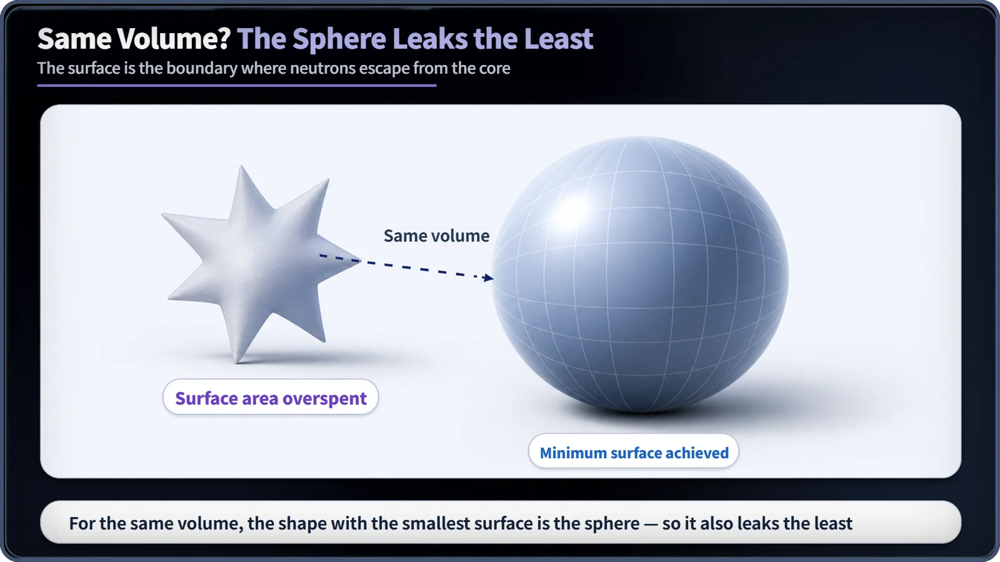
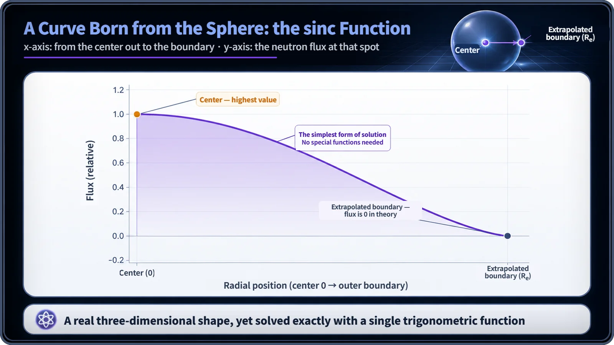

Neutron Physics & the Core · 096
Assume a Spherical Cow — Why the Spherical Reactor Keeps Showing Up in Calculations
For the same volume a sphere has the least surface and the simplest flux equation, which makes it the ideal benchmark of reactor physics, but not a shape anyone builds.
For the same volume, a sphere has the smallest surface, so a spherical core leaks the fewest neutrons, and its diffusion equation has the simplest exact solution of any real three-dimensional shape. That makes the sphere the textbook's favorite benchmark, even though no commercial power reactor has ever been built with a spherical core. [1]
Assume a spherical cow
There's an old joke among physicists. A dairy farmer asks a physicist to help boost his milk production. The physicist walks to the blackboard and begins: "First, assume a spherical cow." It teases the physicist's habit of stripping away messy reality to get the easiest possible shape.
Oddly enough, in reactor physics the joke is close to the truth. When textbooks build worked examples about the shape of a reactor core, one phrase turns up again and again: "Assume a spherical core." We've already seen how two directions, radius and height, combine to shape the flux in a cylindrical core. The last character in this story of shapes is the sphere. So what makes it so special that physicists would happily treat even a cow as one?
The laziest optimization: the shape that leaves the least surface
Here's the short answer: a sphere is the shape that holds a given amount with the least surface. More precisely, among all solid shapes enclosing the same volume, the sphere is the one with the smallest surface area. This isn't a special fact about reactors. It's a general theorem of pure geometry (the three-dimensional form of the isoperimetric inequality). It's the same reason a soap bubble comes out round and a drop of water floating in the air pulls itself into a ball.
In a reactor, though, the surface of the core has a particular meaning. It's where neutrons, after wandering around inside the core, finally slip out (leak away). So if we compare cores built from the same amount of fuel and moderator, the shape with the smallest surface is the one with the smallest boundary for neutrons to escape through. The lazy geometric choice of "minimize the surface" translates directly into the very practical goal of "minimize leakage."

And yet the equation gets easier, not harder
To find how the neutron flux is distributed inside a core, you have to solve a diffusion equation, and the sphere is by far the friendliest shape for that job too. The reason is perfect symmetry: a sphere looks exactly the same from every direction. A single number, the distance from the center (the radius r), tells you everything about the flux at any point. A three-dimensional problem effectively shrinks to a one-dimensional one.
Here is what the solution looks like:
φ(r) = φ₀ × sin(πr/Rₑ) / (πr/Rₑ)
Here r is the distance from the center of the core, and Rₑ is the extrapolated boundary (the imaginary radius at which the flux would fall exactly to zero in theory). A function of the form sin(x) divided by x is called the sinc function. Like the cosine for the slab and the Bessel function J₀ for the cylinder, it is a bell-like shape: largest at the center (r = 0), easing off smoothly toward the outside, and reaching zero at the boundary. [1]
Now for the fun twist. The slab only became a one-dimensional problem thanks to an assumption that doesn't exist in reality: an "infinitely wide flat plate." The cylinder is a shape you could actually build, but its answer required a somewhat fussy special function, the Bessel function. The sphere is a perfectly real, buildable three-dimensional solid, and yet its answer comes out as a single sine function. No special functions needed; plain high-school trigonometry gives the exact answer.

That's why it becomes the textbook's ideal benchmark
Put the two facts together, the smallest surface and the simplest equation, and the spherical core earns a unique place in reactor physics. Buckling is the constant set by a core's size and shape. For a sphere, the geometric buckling is Bg² = (π/Rₑ)², and when shapes of the same volume are compared, this value comes out smaller for the sphere than for any other shape. A smaller buckling means the core can reach criticality (the state in which the chain reaction sustains itself) with less material. So the sphere serves as the benchmark for "the shape that, in theory, reaches criticality with the least material." [1]
The numbers back this up. The peaking factor, which tells you how much higher the flux at the center is than the average over the whole core, works out to π²/3, or about 3.29, for a sphere.
| Idealized shape | Flux shape | Peaking factor (center ÷ average) |
|---|---|---|
| Slab (infinite plate) | cosine | π/2 ≈ 1.57 |
| Cylinder (radial × axial) | Bessel J₀ × cosine | about 3.6 |
| Sphere | sinc, sin(x)/x | π²/3 ≈ 3.29 |
These three values shouldn't be ranked to suggest that a smaller surface always means a smaller peaking factor, because the shapes differ in their boundary conditions and in their dimensions. Still, whenever students first learn reactor physics, the sphere appears as "the theoretically most favorable extreme among shapes" and serves as a baseline set side by side with the slab and the cylinder.
But nobody actually builds one
Here's a point that is very easy to get wrong. "If it's that favorable in the calculations, why not build a spherical reactor?" The answer is no. No commercially operated power reactor to date has had a perfectly spherical core. The reasons have nothing to do with the math and everything to do with engineering reality.
Coolant has to flow evenly through every corner of the core, and a sphere makes it hard to lay out uniform flow channels. Periodically removing old fuel and loading new fuel, and inserting control rods, are far easier with cylinders and square lattices. From the standpoint of manufacturing the pressure vessel and supporting the core structurally, the cylinder is far more practical too. So real commercial reactors stack square fuel assemblies in a lattice arranged to be roughly cylindrical overall. The sphere is only an ideal benchmark for calculation, and a small buckling says nothing about safety, which real plants secure through separate principles such as multiple barriers and defense in depth.
Key takeaways
For the same volume, the sphere has the smallest surface and therefore the least leakage; its flux is the sinc function φ₀ sin(πr/Rₑ)/(πr/Rₑ), solved exactly with trigonometry alone; its geometric buckling (π/Rₑ)² is the smallest of any shape of equal volume, so in theory it reaches criticality with the least material, and its peaking factor is π²/3 ≈ 3.29. That makes it the ideal benchmark of textbooks, not a shape anyone builds. Whenever you read about reactor physics, it helps to ask: is this a calculation assumption, or a real design?